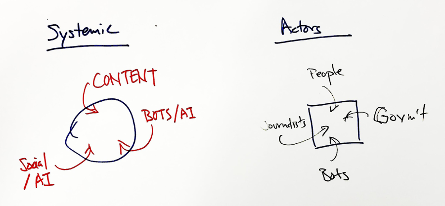
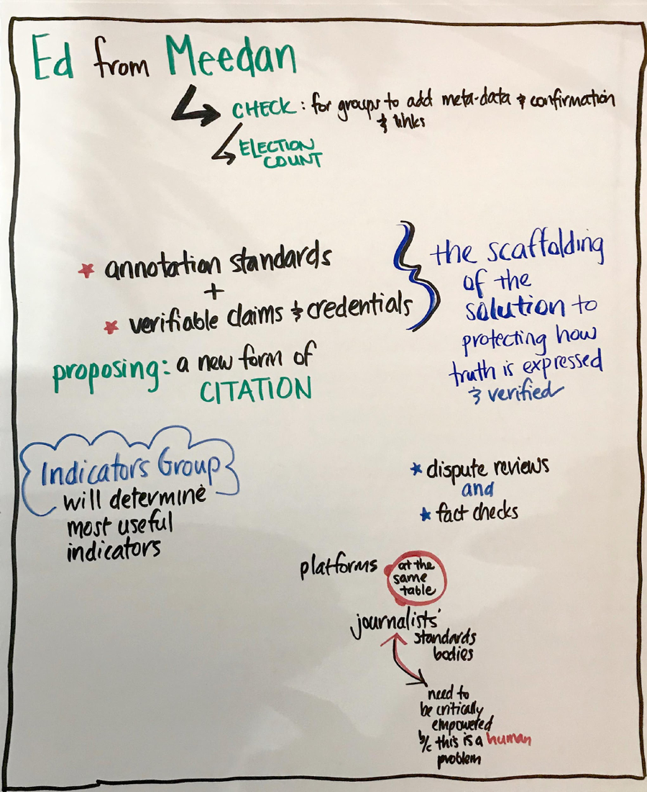
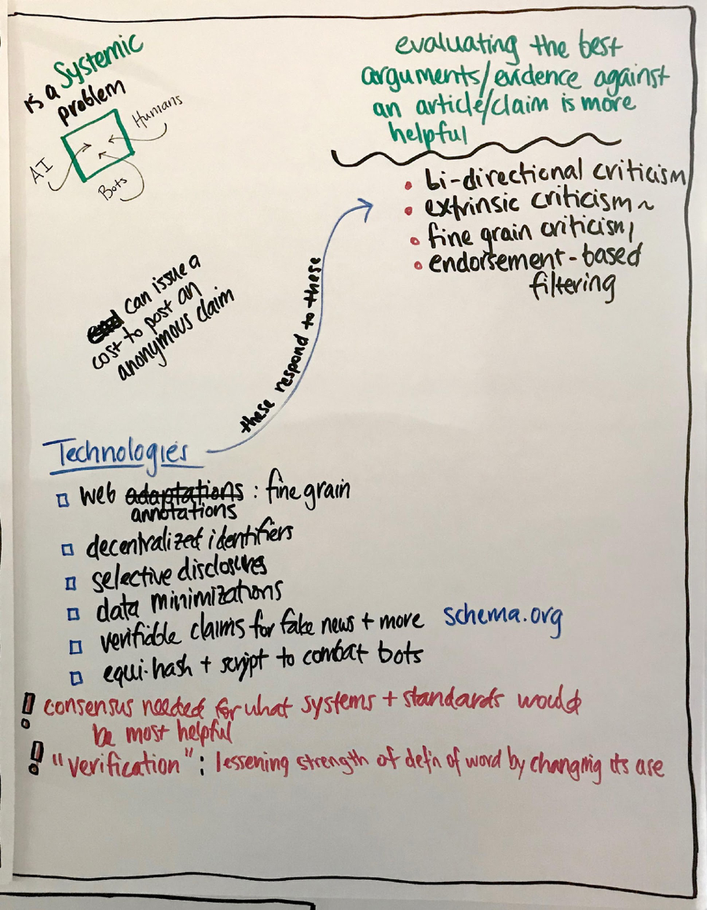
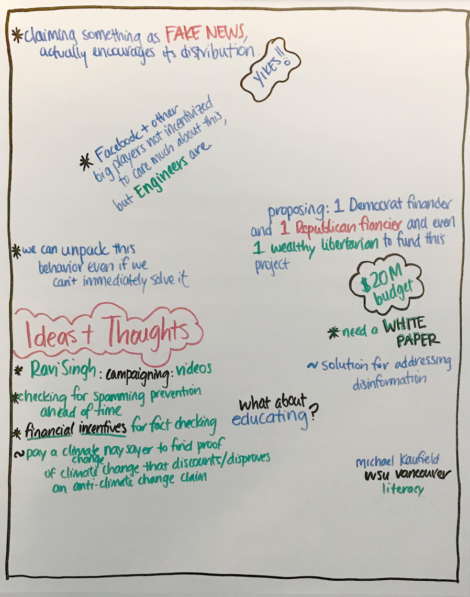

October 4, 2017
Rebooting Web of Trust Workshop
Cambridge, Mass
Notes from Meeting with Credibility Indicators Working Group
Guests: Ed Bice of Meedan and Sandro Hawke of W3C
W3C Community Credentials Group leadership: Christopher Allen, Manu Sporny and Moses Ma
Date/Time: October 4th, 12:30 to 3:30 pm
Notes
These are top level findings, please feel free to annotate if you attended this meeting.
-
Ed provided some background about his history and the history of Meedan, which builds digital tools for global journalism and translation.
-
History of Meedan: https://meedan.com/en/about/
-
Meedan has a solution called “Check” to enable confirmations and add meta-data https://meedan.com/check
-
Annotation standards and verifiable claims and credentials are the scaffolding of the solution to protecting how credibility indicators are expressed, and how various version of the ‘truth of a link, claim, or source’ is verified/contextualized and how these conclusions are expressed.
-
Dispute reviews (Facebook) and fact checks (Google) are already being utilized by the platforms, this is an opening for our work to have scaled impact.
-
Essentially, we are proposing a new form of citation that is fully digitally enabled and applicable to the 21^st^ century
-
It is the job of the Credibility Indicators Working Group to determine most useful indicators, building consensus from a the groups stakeholders
-
Platforms, journalist’s standards bodies, and other stakeholders all need to participate in this process if it is going to succeed.
-
Our working group does hold one bias: While we seek to develop indicators that take human and machine generated signals, Journalists need to be critically empowered because this is a human problem, not an algorithmic problem at its heart
-
Fake news is a systemic problem, and we need to address the incentives for journalists, content creators, platforms, standards bodies, and consumers.
-
This includes consideration of human and non-human distribution networks, Algorithms and AIs that might play a role in content creation and distribution, and the social/psychological aspects of taking in content corrections and correction distribution.
-
Evaluating the best arguments/evidence against an article/claim is often more helpful than trying to prove the truth of the article or claim
-
‘Showing the work’ done in fact-checks and debunks is critical. As is ‘showing the context’ of the person and/or organization/media provider doing the work.
-
Responsive technologies include
-
bi-directional criticism
-
extrinsic criticism (a component of Xanadu)
-
fine grain criticism (Ibid)
-
endorsement-based filtering (scripts that filter on certain credential criteria)
-
-
Many technologies from the Credentials community can help, and emerging technologies, like selective disclosure and data minimization will help a LOT
-
We need to be aware of www.schema.org - they have already implemented a first pass at ClaimReview - though by their own admission this should be extended.
-
We need to investigate Equihash and Scrypt to combat bots and sibyl attacks through proof of work strategies
-
There was some philosophical discussion around the use of the word “verification” as things are now considered to be partially true - the conclusion suggested by Ed was that we need a model that allows many parties to make assertions about the context/veracity/truth of a given claim/image/link/source. The meaning of the word ‘verified’ then becomes a function of how effectively a given system user has deployed that word. And the measure of effectiveness is likely to be a combination of performance broadly defined and performance defined within a network (or other) filter.
-
Psychological perspective: Labeling a source as “Fake News” actually encourages its distribution by the recalcitrant, according to the research
-
Facebook and other platform providers are in some cases more incentivized to care about engagement than combating fake news; but there is no question that their engineers, and perhaps even members of their management team, are very motivated to have FB serves broader social goals.
-
We need to unpack the psychological payoffs and motivations behind fake news problem – this requires more research
-
Everyone is liking the idea of balancing Democrat and 1 Republican philanthropic funding sources to fund this project
-
Total budget proposed is \$20 Million
-
The first thing we need is a white paper, which Ed and Manu will write
-
Question: what about education? Answer: look at what Michael Caufield is doing at WSU Vancouver around really nuanced digital literacy - much better than what FB is currently promoting.
-
Ideas and Thoughts: let’s use videos to educate, need to embed financial incentives for fact checking – this might be possible via tokenization

Action Planning:
The agreement going forward requires five bold first steps -
1) Moses and Ed will work on a Powerpoint presentation for funders, to be ready in TWO WEEKS
2) Moses and Ed have a goal to raise a quick round of philanthropic funding, from a balanced mix of liberal/conservative philanthropists, to pay for initial work and get fast traction
3) Manu and Ed - as proxy for CIWG - will work a white paper with the goal of merging CHECK from Meedan and VCs from CCG, to be completed within ONE MONTH
4) Sandro will work on getting our proposal on a fast track with the W3C.
5) Get work done quickly so we can present to key stakeholders and socialize at the W3C meeting in San Francisco in a month, with the goal of achieving rapid traction
People who signed up to help
| Name |
|---|
| Tiemae |
| Joao Santos |
| Shireen Mitchell |
| Raghav Chawla |
| Mark S. Miller |
| Gautam Dhameja |
| Ryan Grant |
| Kim Duffy |
Graphic Recordings follow



* Graphic Recording by Claire Rumore, FutureLab